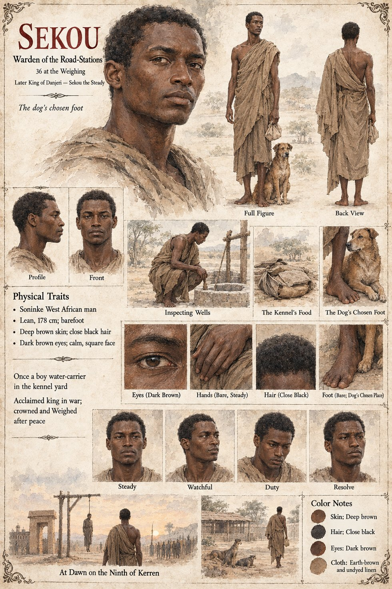

Sekou
Second prince, Warden of the Road-Stations, then King of Danjeri · the dog's chosen foot · Sekou the Steady · 31 in Chapter Eight, 36 at the Weighing
Binta's son, born two winters after Alassane, and sent at six to Kolo's yard, the only place in the palace where a boy could spend his days being useful to no faction whatever. Kolo, who dislikes children and princes, tells the six-year-old with the honeyed millet cakes that if he wishes to stay he may carry water, and Sekou carries it for two years with such stubborn, uncomplaining exactness that Kolo, against every principle he owns, begins to like him. In the harmattan, when his bare feet go numb in the lean-to where he sleeps, the dog crosses the room one night, turns around twice and lies down across them; by the end of the season it sits on his foot the way other dogs sit on hearthstones. It was not devotion, exactly; devotion is an attitude, and this was a habit. He breaks his arm at twelve, falling from the stable roof after a stray kite, and the first physician to reach him is Awa's own bone-setter. At thirty-one he is Warden of the Road-Stations, the office of wells and caravan shelters, given to him on the principle that no one has ever been assassinated for a well, and every seventh day he walks to the kennel yard in a plain wrapper with a cloth of something to eat, says a few words about nothing, and the dog crosses the yard and sits on his left foot.
At the Weighing he stands barefoot in the plain cloth he would have worn to inspect a well, like someone waiting to be told he had come to the wrong place, and when the dog sits on his foot before two thousand people he understands that he had just been made a very great deal of use. That night in the kennel yard he says, It has chosen me, and Kolo answers, It has chosen your foot; he laughs once, the way a man laughs at a bill he cannot pay. When the war comes he is acclaimed in the Ancestor Court by a crowd that would have acclaimed a well, accepts it the way he had once accepted a bucket, because it was in front of him, and for thirty-one months sits on a stool in the plain wrapper and signs what is put in front of him. Each evening, when the day's dead have been reckoned, he walks to the kennel yard and asks Kolo how the dog is. Eleven: the only number in Danjeri, in all those months, that has not got worse.
He agrees to the sandbar's hardest clause, that Awa shall not be tried, after consulting his mother, and makes the concession, the largest of his life, in the voice in which he would have agreed to dig a well. He hangs Sory from the old tamarind at dawn on the ninth of Kerren, because a truce-breaker who was not hanged was an invitation; he hears the matter himself and did not enjoy it, and did not pretend to. When the dog is found dead he comes on foot, sits on the water-jar and puts his feet on the earth, and waits. Nothing came to sit on them. It is, the book says, the coldest he has ever been. He tells Kolo he is sorry, and Kolo says that it did not matter to the dog.
He is Weighed in the spring, with no dog and a bare foot on the cold red earth, and an unremarkable thread of smoke that bends east after a moment's hesitation. He reigns twenty-six years more, rebuilds the granaries, the wells and, in the eleventh year, the ford of the Second Road, and is remembered as Sekou the Steady, the best king Danjeri could afford. He never orders the dog's name struck from the Account or entered in it. On every Uncounted Day for the rest of his life he walks alone to the kennel yard, sits on the water-jar for an hour and does not ask anything to sit on his feet.
The manuscript gives his ages, his plain wrapper, his bare feet and the dog's habit. The sheet's age of 36 at the Weighing, lean 5 ft 10 in (178 cm) build, deep brown skin, close black hair, dark brown eyes and calm square face are its own, as are its panels Steady, Watchful, Duty and Resolve and its scenes Inspecting Wells, The Kennel's Food, The Dog's Chosen Foot and At Dawn on the Ninth of Kerren. Its title strip, The dog's chosen foot, and its line Later King of Danjeri — Sekou the Steady follow the manuscript's Epilogue. Chapter Twelve's narration says that Sekou had, at seven, on a cold night, taught the dog to sit on his foot and that Kolo let him, which does not match Chapter Six, where the dog crosses the lean-to and lies down across his bare feet of its own accord; the page reports both.
“the best king Danjeri could afford”